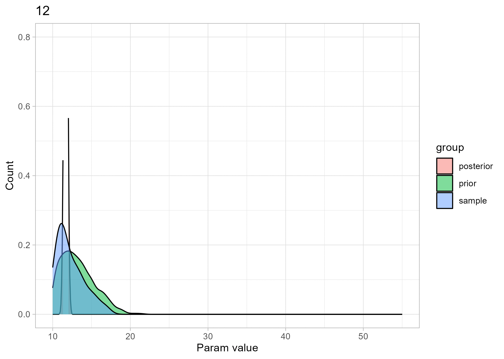

library(rstanarm)
library(ggplot2)
library(bayesplot)
library(blavaan)
library(dplyr)
library(magick)
library(ggplot2)
library(tidyverse)
library(ggridges)
library(dplyr)
library(tidyr)
library(rsvg)
theme_set(bayesplot::theme_default())
theme_set(theme_bw())3 Bayes filter - Mean influence
3.1 Mean study
Lets make a dataframe of each iteration and put this in a list. Then use this list to create the plots later. The making of the plots in a different loop makes that the program is more easily adjustable. If we want to make changes in the plots we don’t have to run the data frame creation
## create the sample (data)
set.seed(1234)
n <- 100
x0 <- rnorm(n, 12, 2)
b0 = 1
y = b0 * x0
df = data.frame(y, x0)
# Design the different priors -> in this case only the variance changes
means <- c(12:50)
# variance <- c(1:3)
# initialise the list for plotting the distributions later on
list_posterior <-list()
list_prior <- list()
#index
count_i <- 0
#fit the model and produce the posterior, save both posterior and corresponding prior
for(i in means){
# for(i in 1:15){
print(i)
count_i <- count_i +1
list_prior[[count_i]] <- as.array(rnorm(2000, i, 3))
fit_test <- stan_glm(y ~ 1,
data = df,
prior_intercept = normal(c(i), 3),
cores = parallel::detectCores(),
seed = 1234)
draws <- as.data.frame(fit_test)
list_posterior[[count_i]] <- draws$`(Intercept)`
}[1] 12
[1] 13
[1] 14
[1] 15
[1] 16
[1] 17
[1] 18
[1] 19
[1] 20
[1] 21
[1] 22
[1] 23
[1] 24
[1] 25
[1] 26
[1] 27
[1] 28
[1] 29
[1] 30
[1] 31
[1] 32
[1] 33
[1] 34
[1] 35
[1] 36
[1] 37
[1] 38
[1] 39
[1] 40
[1] 41
[1] 42
[1] 43
[1] 44
[1] 45
[1] 46
[1] 47
[1] 48
[1] 49
[1] 50## prep the data
list_dist <- list()
for(index in 1:length(means)){
a <- list_posterior[[index]]
b <- list_prior[[index]]
c <- y
ab_ <- append(a,b)
abc_ <- append(ab_, c)
df_dist <- data.frame(abc_)
df_dist <- data.frame(unlist(df_dist))
df_dist$group <- c(rep('posterior', length(a)), rep('prior', length(b)), rep('sample', length(c)))
list_dist[[index]] <- df_dist
}3.1.1 Ridgeline plots - Create plots and .gif from the results
## create a directory to which the images will be written
dir_out <- file.path(getwd(), "post_prior_data_ridge_means")
dir.create(dir_out, recursive = TRUE)
## Create the plots with ridgelines
for(j in 1:length(means)){
## Creating the plots
# p <- ggplot(list_dist[[j]], aes(x = unlist.df_dist., y = group, fill = group)) +
# stat_density_ridges(quantile_lines = TRUE, quantiles = 0.5) +
# labs(x = "Param value", y = "Prob", title = means[j]) +
# xlim(10, 55) +
# theme(legend.position = "none")
p <- ggplot(list_dist[[j]], aes(x = unlist.df_dist., y = group, fill = 0.5 - abs(0.5 - stat(ecdf)))) +
stat_density_ridges(geom = "density_ridges_gradient", calc_ecdf = TRUE) +
scale_fill_viridis_c(name = "Tail probability", direction = -1)+
theme(legend.position = "none") +
xlim(10, 55) +
labs(x = "Param value", y = "Count", title = means[j])
fp <- file.path(dir_out, paste(stringr::str_pad(j, 4, pad = "0"), ".png", sep=""))
ggsave(plot = p,
filename = fp,
device = "png")
}
# list file names and read in
imgs <- list.files(dir_out, full.names = TRUE)
# imgs <- list.files(dir_out)
img_list <- lapply(imgs, image_read)
## join the images together
img_joined <- image_join(img_list)
## animate at 2 frames per second
img_animated <- image_animate(img_joined, fps = 2, optimize = FALSE)
## save to disk
image_write(image = img_animated,
path = "post_prior_data_ridge_means.gif")3.1.2 Histogram plots - Create the plots with histograms
dir_out <- file.path(getwd(), "post_prior_data_hist_means")
dir.create(dir_out, recursive = TRUE)
for(j in 1:length(means)){
## Creating the plots
p <- ggplot(list_dist[[j]], aes(x = unlist.df_dist., fill = group )) +
geom_histogram() +
# ylim(0, 0.8) +
xlim(10, 55) +
theme_light() +
labs(x = "Param value", y = "Count", title = means[j])
fp <- file.path(dir_out, paste(stringr::str_pad(j, 4, pad = "0"), ".png", sep=""))
ggsave(plot = p,
filename = fp,
device = "png")
}
# list file names and read in
imgs <- list.files(dir_out, full.names = TRUE)
img_list <- lapply(imgs, image_read)
## join the images together
img_joined <- image_join(img_list)
## animate at 2 frames per second
img_animated <- image_animate(img_joined, fps = 2, optimize = TRUE)
## save to disk
image_write(image = img_animated,
path = "post_prior_data_hist_means.gif")3.1.3 Density plots - Create the plots with Density plots
dir_out <- file.path(getwd(), "post_prior_data_dens_means")
dir.create(dir_out, recursive = TRUE)
for(j in 1:length(means)){
## Creating the plots
p <- ggplot(list_dist[[j]], aes(x = unlist.df_dist., fill = group )) +
geom_density(alpha = .5) +
ylim(0, 0.8) +
xlim(10, 55) +
theme_light() +
labs(x = "Param value", y = "Count", title = means[j])
fp <- file.path(dir_out, paste(stringr::str_pad(j, 4, pad = "0"), ".png", sep=""))
ggsave(plot = p,
filename = fp,
device = "png")
}
# list file names and read in
imgs <- list.files(dir_out, full.names = TRUE)
img_list <- lapply(imgs, image_read)
## join the images together
img_joined <- image_join(img_list)
## animate at 2 frames per second
img_animated <- image_animate(img_joined, fps = 2, optimize = TRUE)
## save to disk
image_write(image = img_animated,
path = "post_prior_data_dens_means.gif")
play_image <- TRUE
if(play_image){
## view animated image
img_animated}